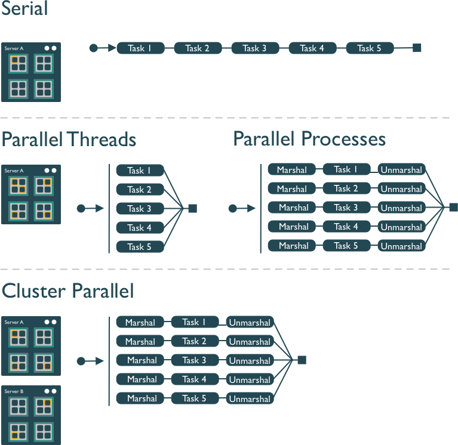

def task(x):
import numpy as np
result = np.arange(x*10**8).sum()
return result4 Pleasingly Parallel Programming
4.1 Learning Objectives
- Understand what parallel computing is and when it may be useful
- Understand how parallelism can work
- Review sequential loops and map functions
- Build a parallel program using
concurrent.futures - Build a parallel program using
parsl - Understand Thread Pools and Process pools
4.2 Introduction
Processing large amounts of data with complex models can be time consuming. New types of sensing means the scale of data collection today is massive. And modeled outputs can be large as well. For example, here’s a 2 TB (that’s Terabyte) set of modeled output data from Ofir Levy et al. 2016 that models 15 environmental variables at hourly time scales for hundreds of years across a regular grid spanning a good chunk of North America:

There are over 400,000 individual netCDF files in the Levy et al. microclimate data set. Processing them would benefit massively from parallelization.
Alternatively, think of remote sensing data. Processing airborne hyperspectral data can involve processing each of hundreds of bands of data for each image in a flight path that is repeated many times over months and years.

4.3 Why parallelism?
Much R code runs fast and fine on a single processor. But at times, computations can be:
- cpu-bound: Take too much cpu time
- memory-bound: Take too much memory
- I/O-bound: Take too much time to read/write from disk
- network-bound: Take too much time to transfer
To help with cpu-bound computations, one can take advantage of modern processor architectures that provide multiple cores on a single processor, and thereby enable multiple computations to take place at the same time. In addition, some machines ship with multiple processors, allowing large computations to occur across the entire cluster of those computers. Plus, these machines also have large amounts of memory to avoid memory-bound computing jobs.
4.4 Processors (CPUs) and Cores
A modern CPU (Central Processing Unit) is at the heart of every computer. While traditional computers had a single CPU, modern computers can ship with mutliple processors, which in turn can each contain multiple cores. These processors and cores are available to perform computations.
A computer with one processor may still have 4 cores (quad-core), allowing 4 computations to be executed at the same time.

A typical modern computer has multiple cores, ranging from one or two in laptops to thousands in high performance compute clusters. Here we show four quad-core processors for a total of 16 cores in this machine.

You can think of this as allowing 16 computations to happen at the same time. Theroetically, your computation would take 1/16 of the time (but only theoretically, more on that later).
Historically, R has only utilized one processor, which makes it single-threaded. Which is a shame, because the 2017 MacBook Pro that I am writing this on is much more powerful than that:
jones@powder:~$ sysctl hw.ncpu hw.physicalcpu
hw.ncpu: 12
hw.physicalcpu: 6To interpret that output, this machine powder has 6 physical CPUs, each of which has two processing cores, for a total of 12 cores for computation. I’d sure like my computations to use all of that processing power. Because its all on one machine, we can easily use multicore processing tools to make use of those cores. Now let’s look at the computational server included-crab at NCEAS:
jones@included-crab:~$ lscpu | egrep 'CPU\(s\)|per core|per socket'
CPU(s): 88
On-line CPU(s) list: 0-87
Thread(s) per core: 1
Core(s) per socket: 1
NUMA node0 CPU(s): 0-87Now that’s more compute power! included-crab has 384 GB of RAM, and ample storage. All still under the control of a single operating system.
However, maybe one of these NSF-sponsored high performance computing clusters (HPC) is looking attractive about now:
- JetStream
- 640 nodes, 15,360 cores, 80TB RAM
- Stampede2 at TACC
- 4200 KNL nodes: 285,600 cores
- 1736 SKX nodes: 83,328 cores
- 224 ICX nodes: 17,920 cores
- TOTAL: 386,848 cores
Note that these clusters have multiple nodes (hosts), and each host has multiple cores. So this is really multiple computers clustered together to act in a coordinated fashion, but each node runs its own copy of the operating system, and is in many ways independent of the other nodes in the cluster. One way to use such a cluster would be to use just one of the nodes, and use a multi-core approach to parallelization to use all of the cores on that single machine. But to truly make use of the whole cluster, one must use parallelization tools that let us spread out our computations across multiple host nodes in the cluster.
4.5 Modes of parallelization
- TODO: describe these modes

4.6 Simple task parallelization
Start with a task that is a little expensive:
import numpy as np
@timethis
def run_tasks_s(task_list):
return [task(x) for x in task_list]
run_tasks_s(np.arange(10))run_tasks_s: 153655.17115592957 ms[0,
4999999950000000,
19999999900000000,
44999999850000000,
79999999800000000,
124999999750000000,
179999999700000000,
244999999650000000,
319999999600000000,
404999999550000000]from concurrent.futures import ThreadPoolExecutor
@timethis
def run_tasks_p(task_list):
with ThreadPoolExecutor(max_workers=20) as cf_executor:
return cf_executor.map(task, task_list)
results = run_tasks_p(np.arange(10))
[x for x in results]4.7 Setup – downloading data for staging
In this exercise, we’re going to parallelize a simple task that is often very time consuming – downloading data. And we’ll compare performance of simple downloads using first a serial loop, and then using two parallel execution libraries: concurrent.futures and parsl. More on those later. But note that parallel execution won’t always speed up this task, as this is likely an I/O bound task if you’re downloading a lot of data. But we still should be able to speed things up a lot until we hit the limits of our disk arrays.
The data we are downloading is a pan-Arctic time series of TIF images containing rasterized Arctic surface water indices from:
Elizabeth Webb. 2022. Pan-Arctic surface water (yearly and trend over time) 2000-2022. Arctic Data Center doi:10.18739/A2NK3665N.
First, let’s download the data serially to set a benchmark. The data files are listed in a table with their filename and identifier, and can be downloaded directly from the Arctic Data Center using the identifier:
| filename | identifier | |
|---|---|---|
| 0 | SWI_2007.tif | urn:uuid:5ee72c9c-789d-4a1c-95d8-cb2b24a20662 |
| 1 | SWI_2019.tif | urn:uuid:9cd1cdc3-0792-4e61-afff-c11f86d3a9be |
| 2 | SWI_2021.tif | urn:uuid:14e1e509-77c0-4646-9cc3-d05f8d84977c |
| 3 | SWI_2020.tif | urn:uuid:1ba473ff-8f03-470b-90d1-7be667995ea1 |
| 4 | SWI_2001.tif | urn:uuid:85150557-05fd-4f52-8bbd-ec5a2c27e23d |
4.8 Task parallelism: serial downloads
When you have a list of repetitive tasks, you may be able to speed it up by adding more computing power. If each task is completely independent of the others, then it is a prime candidate for executing those tasks in parallel, each on its own core. For example, let’s build a simple loop that downloads the data files that we need for an analysis. First, we start with the serial implementation.
import urllib
def download_file(row):
service = "https://arcticdata.io/metacat/d1/mn/v2/object/"
pid = row[1]['identifier']
filename = row[1]['filename']
url = service + pid
print("Downloading: " + filename)
msg = urllib.request.urlretrieve(url, filename)
return filename
@timethis
def download_list(dl_list):
return [download_file(row) for row in dl_list.iterrows()]
results = download_list(id_list[0:5])
print(results)Downloading: SWI_2007.tifDownloading: SWI_2019.tifDownloading: SWI_2021.tifDownloading: SWI_2020.tifDownloading: SWI_2001.tifdownload_list: 732639.6775245667 ms
['SWI_2007.tif', 'SWI_2019.tif', 'SWI_2021.tif', 'SWI_2020.tif', 'SWI_2001.tif']In this code, I have one function (download_file) that downloads a single data file and saves it to disk. It is called iteratively from the function download_list. The serial execution takes about 15.2 seconds, but can vary by a few seconds.
The issue with this loop is that we execute each trial sequentially, which means that only one of our processors on this machine is in use. In order to exploit parallelism, we need to be able to dispatch our tasks and allow each to run at the same time, with one task going to each core. To do that, we can use one of the many parallelization libraries in python to help us out.
4.9 Task parallelism with concurrent.futures
In this case, we’ll use the same download_file function from previously, but will switch up the download_list to use concurrent.futures.
from concurrent.futures import ThreadPoolExecutor
@timethis
def download_list(dl_list):
with ThreadPoolExecutor(max_workers=15) as cf_executor:
return cf_executor.map(download_file, dl_list.iterrows(), timeout=60)
results = download_list(id_list[0:5])
for result in results:
print(result)Downloading: SWI_2007.tif
Downloading: SWI_2019.tif
Downloading: SWI_2021.tif
Downloading: SWI_2020.tif
Downloading: SWI_2001.tifdownload_list: 172462.17727661133 ms
SWI_2007.tif
SWI_2019.tif
SWI_2021.tif
SWI_2020.tif
SWI_2001.tiffrom concurrent.futures import ProcessPoolExecutor
@timethis
def download_list(dl_list):
with ProcessPoolExecutor(max_workers=15) as cf_executor:
return cf_executor.map(download_file, dl_list.iterrows(), timeout=60)
results = download_list(id_list[0:5])
for result in results:
print(result)Downloading: SWI_2019.tifDownloading: SWI_2001.tifDownloading: SWI_2020.tifDownloading: SWI_2007.tifDownloading: SWI_2021.tifdownload_list: 169821.66576385498 ms
SWI_2007.tif
SWI_2019.tif
SWI_2021.tif
SWI_2020.tif
SWI_2001.tif4.10 parsl
- Overview of parsl and it’s use of python decorators.
# Required packages
import parsl
from parsl import python_app
from parsl.config import Config
from parsl.executors import HighThroughputExecutor
from parsl.providers import LocalProvider
# Configure the parsl executor
activate_env = 'workon scomp'
htex_local = Config(
executors=[
HighThroughputExecutor(
max_workers=15,
provider=LocalProvider(
worker_init=activate_env
)
)
],
)
parsl.clear()
parsl.load(htex_local)
# Define a parsl_app for our download function using a decorator
@python_app
def download_parsl(row):
import urllib
service = "https://arcticdata.io/metacat/d1/mn/v2/object/"
pid = row[1]['identifier']
filename = row[1]['filename']
url = service + pid
print("Downloading: " + filename)
msg = urllib.request.urlretrieve(url, filename)
return filename
@timethis
def download_list(dl_list):
results = []
for row in dl_list.iterrows():
result = download_parsl(row)
results.append(result)
return(results)
@timethis
def wait_for_futures():
results = download_list(id_list[0:5])
done = [app_future.result() for app_future in results]
print(done)
wait_for_futures()
htex_local.executors[0].shutdown()
parsl.clear()download_list: 174.9715805053711 ms['SWI_2007.tif', 'SWI_2019.tif', 'SWI_2021.tif', 'SWI_2020.tif', 'SWI_2001.tif']
wait_for_futures: 494883.4059238434 ms4.11 When to parallelize
It’s not as simple as it may seem. While in theory each added processor would linearly increase the throughput of a computation, there is overhead that reduces that efficiency. For example, the code and, importantly, the data need to be copied to each additional CPU, and this takes time and bandwidth. Plus, new processes and/or threads need to be created by the operating system, which also takes time. This overhead reduces the efficiency enough that realistic performance gains are much less than theoretical, and usually do not scale linearly as a function of processing power. For example, if the time that a computation takes is short, then the overhead of setting up these additional resources may actually overwhelm any advantages of the additional processing power, and the computation could potentially take longer!
In addition, not all of a task can be parallelized. Depending on the proportion, the expected speedup can be significantly reduced. Some propose that this may follow Amdahl’s Law, where the speedup of the computation (y-axis) is a function of both the number of cores (x-axis) and the proportion of the computation that can be parallelized (see colored lines):
#| eval: false
library(ggplot2)
library(tidyr)
amdahl <- function(p, s) {
return(1 / ( (1-p) + p/s ))
}
doubles <- 2^(seq(0,16))
cpu_perf <- cbind(cpus = doubles, p50 = amdahl(.5, doubles))
cpu_perf <- cbind(cpu_perf, p75 = amdahl(.75, doubles))
cpu_perf <- cbind(cpu_perf, p85 = amdahl(.85, doubles))
cpu_perf <- cbind(cpu_perf, p90 = amdahl(.90, doubles))
cpu_perf <- cbind(cpu_perf, p95 = amdahl(.95, doubles))
#cpu_perf <- cbind(cpu_perf, p99 = amdahl(.99, doubles))
cpu_perf <- as.data.frame(cpu_perf)
cpu_perf <- cpu_perf %>% gather(prop, speedup, -cpus)
ggplot(cpu_perf, aes(cpus, speedup, color=prop)) +
geom_line() +
scale_x_continuous(trans='log2') +
theme_bw() +
labs(title = "Amdahl's Law")So, its important to evaluate the computational efficiency of requests, and work to ensure that additional compute resources brought to bear will pay off in terms of increased work being done. With that, let’s do some parallel computing…
5 Parallel Pitfalls and their solutions
- Race conditions
- Deadlocks
5.1 Summary
In this lesson, we showed examples of computing tasks that are likely limited by the number of CPU cores that can be applied, and we reviewed the architecture of computers to understand the relationship between CPU processors and cores. Next, we reviewed the way in which traditional for loops in R can be rewritten as functions that are applied to a list serially using lapply, and then how the parallel package mclapply function can be substituted in order to utilize multiple cores on the local computer to speed up computations. Finally, we installed and reviewed the use of the foreach package with the %dopar operator to accomplish a similar parallelization using multiple cores.
5.2 Further Reading
Ryan Abernathey & Joe Hamman. 2020. Closed Platforms vs. Open Architectures for Cloud-Native Earth System Analytics. Medium.